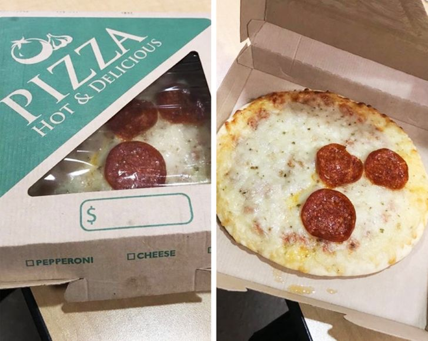

Troca de Produtos Essenciais
Para trocar um produto com defeito, a loja não é obrigada é obrigada se for um
produto essencial (como uma geladeira).
Aqui você vai aprender sobre o que as lojas NÃO podem fazer de acordo com o Código de Defesa do Consumidor (CDC).
"O HTML é uma linguagem, mas não é considerada linguagem de programação."
— Israel Da Costa Cunha

"É vedado ao fornecedor de produtos ou serviços, dentre outras práticas abusivas, condicionar o fornecimento de produto ou de serviço ao fornecimento de outro produto ou serviço, bem como, sem justa causa, a limites quantitativos."
— Artigo 39 da Lei nº 8.078/1990 (CDC)
Para trocar um produto com defeito, a loja não é obrigada é obrigada se for um
produto essencial (como uma geladeira).
A venda casada ocorre quando o estabelecimento condiciona a compra de um produto ou serviço à aquisição obrigatória de outro item...
Você acessou 66,6% do conteúdo desse site:
66,6 %